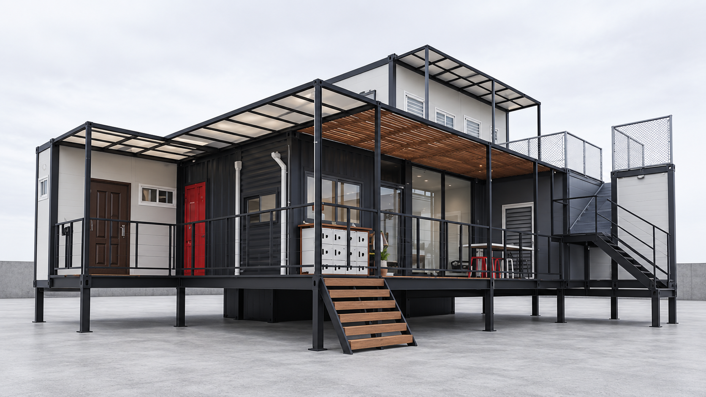

01 THE WAY WE LIVE木質住宅・庭院日常
SCROLL TO EXPLORE ↓
SCROLL TO EXPLORE ↓
SIMPLE. COMFORTABLE. REASSURING.
好好生活，其實可以很簡單。
讓空間回歸生活，讓每一分安排都有意義。
從結構、採光到日常的使用，我們在意家的每一個細節。
易立構，和你一起描繪簡約、舒適、安心的生活。
SPACES & STORIES
家的不同模樣
空間提案與照片皆為規劃示意，實際設計依基地條件與需求確認。
01 / STRUCTURE
從結構，理解安心
從柱樑配置、構件接合到基礎設計，逐一討論空間背後的重要細節。
02 / COMFORT
讓舒適回到日常
將採光、通風、隔熱與防水納入規劃，回應生活的真實需要。
03 / FLEXIBILITY
為生活保留彈性
依基地與使用需求討論格局，讓居住、休憩和工作的想像有適合的位置。
KNOW THE DIFFERENCE
選擇之前，把差異看清楚。
從柱樑、樓板到施工範圍，用相同條件比較組合屋方案。
YOUR HOME, STEP BY STEP
一步一步，靠近理想的家
01
相互認識
分享用途、基地位置與理想中的生活。
02
基地場勘
了解現地環境、進出動線及施工條件。
03
規劃提案
討論格局、材料、預算與施作範圍。
04
確認與施作
依確認的設計與合約安排生產、施工。
05
驗收與交付
逐項確認完成內容與後續維護方式。